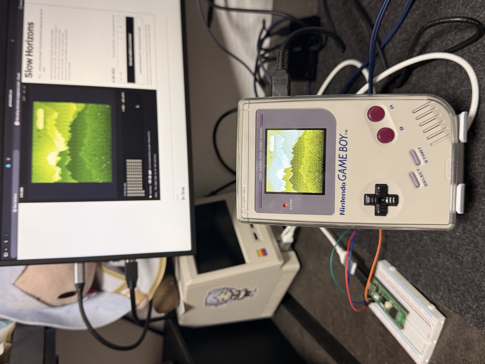

555 landscapes, each drawn live by one Game Boy.
Slow Horizons, 20 to 26 October 2026. Open any piece in the collection, or find yours.
The collection
Every piece in mint order. Filter by what it shows, or search a number, a title or a wallet. Pieces trade on Tensor.
555 pieces
Nothing matches. Clear a filter to see more.
The ten 1/1s
Ten hand-made scenes hidden in the generator, each one drawn once at most. A published rule decided which mints landed on one, so nobody could steer it.
Two were found during the mint. Eight more were drawn after it closed.
How it was made
No emulator, no render farm: one Game Boy from 1989 on a desk in Japan, a link cable and a small bridge board.
No. 115, live, filmed on the desk while it drew.
-
A seed nobody could pick
Each seed came from the payment and the hash of a Solana block that did not exist yet when you paid. Nobody, us included, could pick the landscape.
-
Down the link cable
A Raspberry Pi Pico 2 on the link port talks to the Game Boy like a second console: it sends the seed in and brings the screens out. The bridge is open source: gb-link-usb.

-
Drawn line by line
The ROM draws in phases: sky, sun or moon, clouds, each ridge, ground, water, weather. Each phase went out over the cable as it landed, so the mint page showed the real screen while it worked, and every piece keeps that record as its replay.
The mint page while a piece was drawn.
-
Proof it was the real thing
Two checks on every piece. The bridge timed the Game Boy's link clock while it drew, and a real quartz crystal is never exactly on frequency. Then the finished screen was compared with the same C code compiled for the web.
-
Kept for good
Each piece is stored on Arweave (the 1920 × 1728 image, the 160 × 144 original and the replay) and was minted on Solana to the wallet that paid.
Slow Horizons is a Game Boy Labs project.
Game Boy is a trademark of Nintendo. Not affiliated.
Your pieces
Connect a wallet or paste an address, nothing to sign. Download all your pieces at once, or make a collage.
Make a collage
Tap a piece above to leave it out.